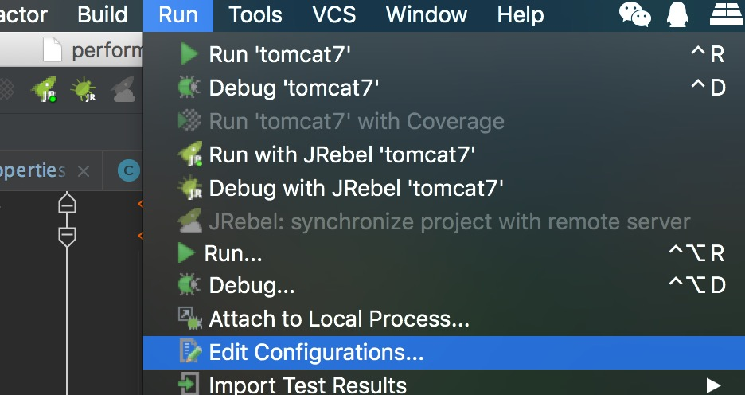
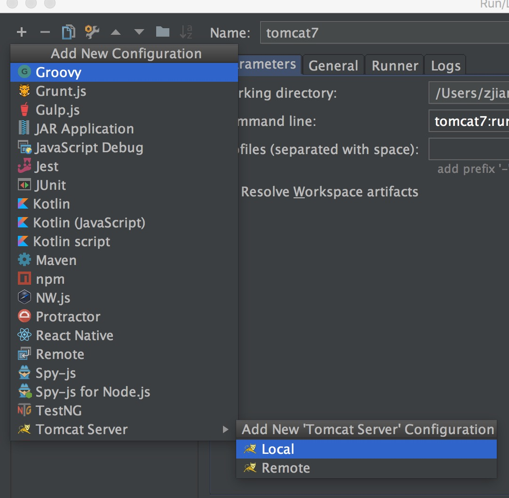
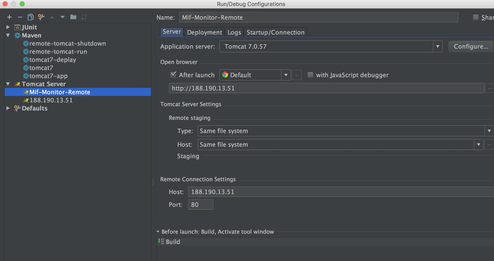
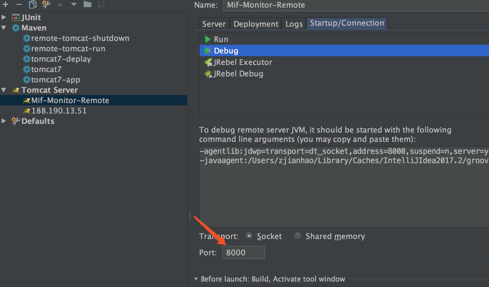
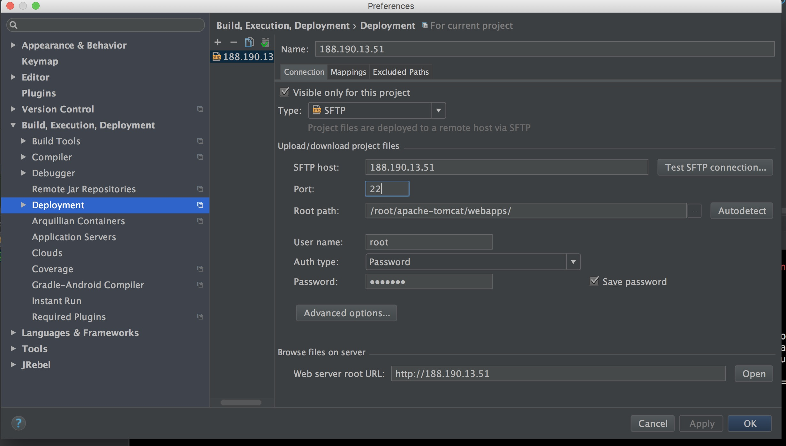
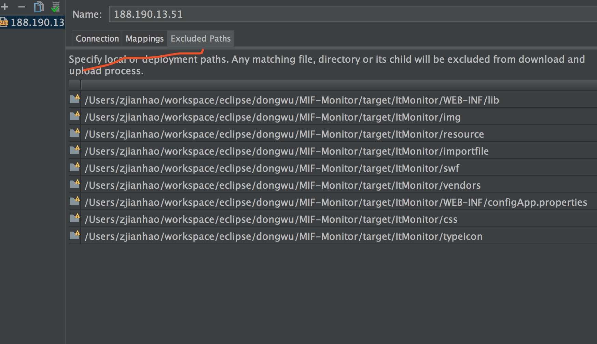
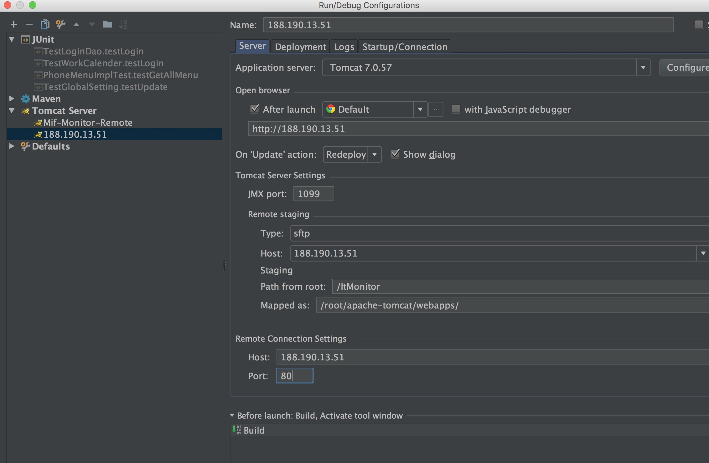
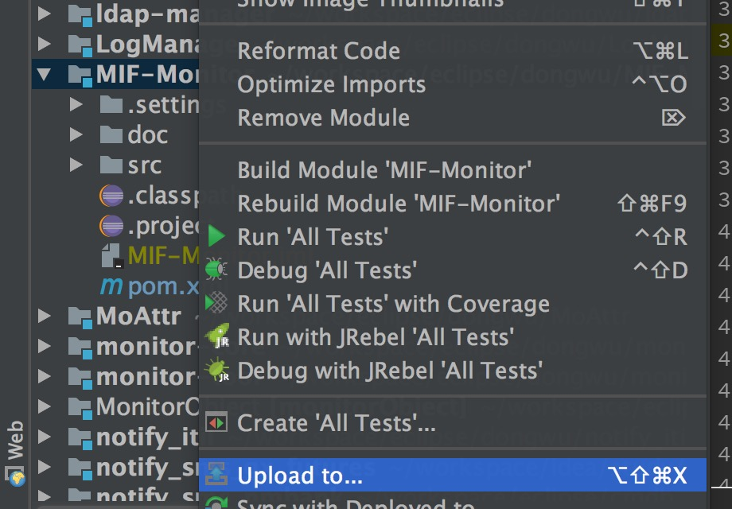

在日常开发中，经常涉及到对于远程的tomcat的操作，对于线上环境中出现的问题，自身环境有时难以复现，这就需要我们决胜bug于千里之外，快速定位问题，解决问题，下面就和小伙伴们聊一聊关于tomcat远程操作的一些常用技巧。
技能一：远程调试
如何进行远程调试呢？idea和eclipse都支持远程调试，下面以idea为例，介绍如何进行远程调试
- 配置tomcat/bin/catalina.sh文件
1 | CATALINA_OPTS="-Xdebug -Xrunjdwp:transport=dt_socket,address=8000,suspend=n,server=y" |
然后重启tomcat
- idea配置



这里的debug端口填写之前配置的8000，传输方式为socket

恩，然后设置好断点之后就可以愉快的远程调试了😀
技能二：远程部署
在以前我们部署项目是怎么部署的呢？通常是打个war包，把war包通过scp命令或者xshell上传到远程服务器上去，然后放在tomcat目录，然后重启tomcat，有了远程部署，我们只需要一键就可以完成以上操作
远程部署有两种方式，一种是用maven做项目管理，这时候我们可以借助于maven插件tomcat-maven-plugin来完成web项目的自动部署，还可以借助于idea自带的sftp文件上传功能，来上传需要部署的web项目。
借助于maven插件
- 部署tomcat manager项目
tomcat默认webapps下面是有manager这个项目的
编辑conf/tomcat-user.xml文件,最后面加入以下配置
1 | <role rolename="manager-gui"/> |
- 重启tomcat，访问manager项目
重启tomcat后，在浏览器访问：http://ip/manager/html这个地址，会弹出输入用户名密码的弹窗，填写的用户名和密码为tomcat-user.xml文件中配置的admin用户，密码为admin
- 配置maven/conf/settings.xml
在servers标签下面配置tomcat的server
1 | <server> |
- 配置web项目的pom.xml文件
1 | <plugin> |
注意：server的名称与maven/conf/settings.xml文件中的名称需要保持一致。
- 部署项目
最后执行tomcat7:depoly命令便可以将本地的web项目部署到远程服务器的webapps目录下了😘。
借助于idea自带sftp
借助于maven插件部署项目只能全部替换部署无法进行增量替换部署，当单个web项目较大时，文件内容较大，全部替换部署就比较慢了，如果需要经常部署，可以借助于下面的方法进行部署可以有选择的部署一部分文件，对于项目中依赖的一些第三方的lib库，通常只需要部署一次，后面便不再需要部署了，没必要每次都重复的传包，文件大，速度又慢。
- 首先在目标机器上检查sftp服务是否可用
1 | service vsftpd status |
如果未开启调用 service vsftpd start开启sftp服务
-
配置catalina.sh文件
首先检查端口1099是否被占用
1 | lsof -i tcp:1099 |
如果没有任何输出表示该端口可用,文件开始部分追加一下内容
1 | export CATALINA_OPTS="$CATALINA_OPTS -Dcom.sun.management.jmxremote |
-
配置sftp地址以及目标机器相关信息

-
配置不上传的文件
忽略部分不必要的lib文件可以加快部署速度

-
配置tomcagt server setting
jmx端口应该填写catalina.sh配置文件中配置的端口

-
部署文件
